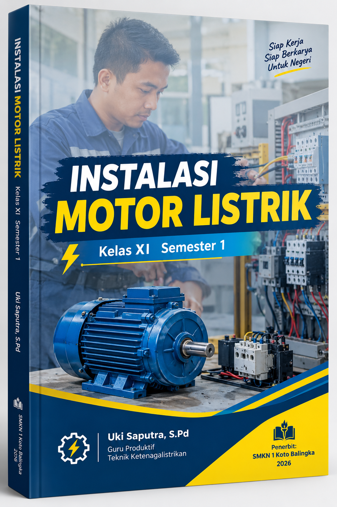

Panduan komprehensif mempelajari pengasutan, kontrol, pemeliharaan, dan troubleshooting motor listrik 1 fasa dan 3 fasa, dilengkapi dengan pendekatan manual dan otomatis (PLC).
Penulis & Pengajar
SMK N 1 Koto Balingka
trauky@gmail.com